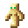
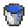

The Community Revolution Update
2019/10/14
yyyy/mm/dd
It's nice to have a proper website for our changelog, for a change, hehe!
No 2000 character limit, no need to use tricks like the :nothing: emoji to help with formatting...
Anyhow, welcome! This page goes into great detail about the new features for our community and what I've been working on for the past few weeks, hope you enjoy!
"Lorio" and our Steam Group!
First off, we now have a steam group!
https://steamcommunity.com/groups/lorio
You might be wondering what lorio is. It's the name I settled on for everything public facing regarding our group, as It wasn't taken on steam, as you can see. It's wonderfully simple, just like our private name is.
I intend on making full use of the steam group, and particularly, the steam group chat. We already have 2~ members that can only be found there, and not on our discord.
Please take the opportunity to include a link to your steam profile in your #introductions post, noparsed by incasing the link inside < and >, like this: <https://example.com>
Or you could @ me with it in #general-chat, your choice.
Anyone who does ether will get an invite to the steam group & the steam group chat
Events System!
The events system was designed from the ground up to aid tona in progressing as a community, offering an easy to use way to schedule, rsvp, and announce, all sorts of events!
Everyone is able to create events. When an event is first scheduled, a preview is posted to #upcoming-events
People can use :checkmark: to rsvp, basically a way to confirm your attendance.
When the scheduled date is reached, an announcement is posted to announcements, mentioning those who rsvp'd!
This allows us to easily plan events in advance!
Use the following commands over in #use-bots-here, which, notably, has message history disabled.
!event or !e - Starts the process of creating an event, the !e alias can be used for the following as well
!event template or !event templates - Lists all the templates
!event template <name> - Shows you a demo of a particular template. For the demo's description, It uses a randomly selected samuel l jackson quote with only text from samuel's side, so it reads like a deranged nonsense paragraph, and serves as a suitable placeholder. samuel l lipsum!
#message-of-the-day
message of the day, or motd, is a pretty good idea that drives daily activity and keeps people interested. However, It had some flaws, particularly that lots of potential motds would get missed and forgotten about, and that it was possible for us to miss days. It was also not the best in regards to consistency.
All of that changes today!
You can now post to #submit-motds, and your motd will be put in a queue. When it's time for a new motd, which happens every 11am US central time, it'll be relayed!
This way, people can always send motds as soon as they think of them and all of them will get used, in order.
It also means it will be much easier to avoid missing a day.
If you edit the message you've sent to #submit-motds, if it's before its been used, the bot will acknowlege and update it's version of your message.
If you delete your message, the bot will remove it from the queue and it won't get relayed.
Be warned though, that #submit-motds has message history disabled, so if you toss an motd in, after you reload or refresh your client, you won't be able to edit or delete it anymore!
If that happens you can still ask me to remove it and I will.
Voice Channel Notifs
Pretty self explainatory, they get sent in #general-chat
Server Overhaul and Pronoun Roles
I've overhauled the channels, roles, and categories, and made the member list look nicer!
Additonally, I've added several roles you can add to yourself to indicate your pronouns, pretty self explainatory:
@! any pronouns
@! they/them
@! she/her
@! he/him
Everyone is still free to make & edit their color role as they see fit.
Everyone can add emojis
Exactly what it says on the tin! Add any you want!
Regarding our minecraft server
Most if not all of you have noticed that minecraft hasn't been up regularly in over a week.
This was because it had started to stagnate, as most people had reached end game, and didn't have much to do.
The minecraft server has returned with this update, and will start being brought up regularly again!
This won't be every single day, as to allow events to take some measure of focus, but I'm definitely keeping it around!
I also wish to express why I, personally, won't lose interest in the minecraft server or playing on it:
When I very first conceptualized the minecraft server, It was because I wanted a safe place to play minecraft, and I wanted a multiplayer enviroment where I would be free to sink time into making works of art: banners, giant builds and cities beyond your wildest dreams, statues, pixel art, map art, etc
In pursuit of that goal one of the projects I'm building on mc rn is a highway to build all of those kinds of art along, to see as you walk down it.
Everyone will be welcome to contribute!
I do, of course, recognize that the community needs to evolve and expand to further itself and that is my goal with this update.
Enjoy!
🦀 Phantoms Have Been Nerfed 🦀
Phantoms no longer grow larger the longer you go without sleeping.
Additionally, they have been statistically nerfed.
They still spawn, however.
It's no longer the end of the world, it's revolution! For our community and against the phantoms!
Two new crafting recipes
Two new crafting recipes! One for vanilla player heads, and the other, a quicker but simultaneously time consuming method for obsidian.
Hover over the items or resize this page width-wise to see some neat website design!
Crafting
 Skeleton Skull
Skeleton Skull

Totem Of Undying
 Rotten Flesh
Rotten Flesh
Rotten Flesh
 Player Head
Player Head
Crafting

Water Bucket
 Lava Bucket
Lava Bucket
 Obsidian
Obsidian
If you have any crafting recipe ideas, feel free to suggest them / toss them my way!
/spawn
As was conducted in the feedback form, I asked your opinion on /spawn
It's in, and ya'll can use it.
I decided to go ahead and let people use it because I want spawn to become a central hub, with roads, and because of the artistic projects I mentioned earlier.
An unexpected new plugin :O
OtherAnimalTeleport is a plugin that allows you to teleport animals alongside you, if they're leashed and within a certain radius, or if they're tamed/considered your pet, they'll teleport with you without needing a lead, if they're within range.
Updated a whole load of stuff
I updated the server and various plugins! this section is just here if you want to know those version numbers for some reason.
papermc from 186 to 209
essentialsx main, chat, and protect, from v2.17.1.15 to v2.17.1.17
guilds from 3.5.3.1 to 3.5.3.4
SAML from 1.3.5 to 2.0.0
placeholder api from 2.10.3 to 2.10.4
limitpillagers from 2.6.0 to 2.9.0
Some notes to end on
One of the first events I'm going to make is for unturned: We could totally run our own, private, unturned server, much like #tona-mc, but I want us to band together as a clan and play on a public server not controlled by us!
Another event is something I'm going to be running weekly, on friday nights! It will be announced when it's ready, and I'm really excited for it!
I hope you see you around, signed,
~ amber